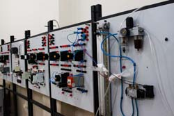
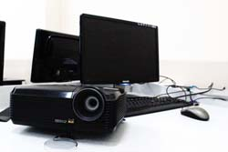
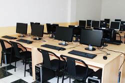
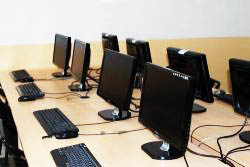
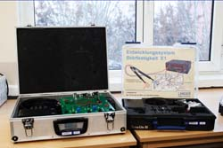

Computer Labs
The staff maintain several instructional computing laboratories in B-Block which are open to students in the department. These labs may be reserved by members of the IAAU for instructional purposes. When not in use for instruction, these classrooms are open as walk-in computing facilities.
The Electronic (Lab-1)

The Electronic Lab is operated by the Department of Industrial Electronics
under the Faculty of New technology, and is used for laboratory classes and research, personal
study.
Specifications
Electronic Laboratory is equipped with 1 computer, a video projector, a marker board,soldering
equipment, 0-24V Power supplies, oscillators, TTL & CMOS Intergrated Circuits, 1 Ohm >> 2
Mohm resisteors, 0.1 mF >> 470 mF capasitors, Transistors bc 547, 109, 2n2222, lm317, Diods,
Emi Tools.
The Mathematics (Lab-2)

Applied Mathematics Lab is operated by the Department of Applied Mathematics under
the Faculty of New technology, and is used for laboratory classes and research, personal study.
Specifications
Math Lab is equipped with 21 computers, a video projector and a marker board. There are 1 server
and 20 client computers, running on Windows 7 with different kinds of network based software
development programs such as Matlab, Maple, Java, Delphi, Visual C, Python etc.
Networking Lab (Lab-3)

The Network Lab is operated by the Department of Computer Engineering under
the Faculty of New technology, and is used for laboratory classes and research, personal study.
Specifications
Network Laboratory is equipped with 25 computers, a video projector and a marker board. There
are 1 server and 24 client computers, running on Windows 7 with different kinds of network based
software development programs such as Eclipse, Delphi, VMware, Visual Studio, etc.
Software Development Lab (Lab-4)

The Software Development Lab is operated by the Department of Computer
Engineering under the Faculty of New technology, and is used for laboratory classes and research,
personal study.
Specifications
It is equipped with 25 computers, projector and a marker board. All machines are running under
Linux operating system, Fedora. Students mostly spend time programming. There are 1 server and
24 client computers, with all precompiled software which comes with the OS itself.
Electronics Lab (Lab-6)

The Electronics Lab is operated by the Department of Industrial Electronics
under the Faculty of New technology, and is used for laboratory classes and research, personal
study.
Specifications
Electronic Laboratory is equipped with 9 computers, a video projector and a marker board.
The lab supports more advanced experiments in signals and systems, communications,
electromagnetism, and photonics. There are 31 stations in the Electronics Lab. Each station
consists of:
Lenovo ThinkCentre workstation running Windows 7,
Agilent Multimeter 34410A,
Agilent triple DC power supply E3631A,
Agilent Function Generator 33120A,
Oscilloscopes,
15 stations include HP/Agilent MSO6012A mixed signal oscilloscope,
16 stations include LeCroy WaveSurfer 422 touch-screen oscilloscope,
All devices on each station are connected to the computer.
The Smart Class
The Smart Class is operated by the Department of Computer Science under
the Faculty of New Technologies, used for Distance Learning, Online Seminars, Collaboration
courses and Teleconferences.
Specifications
Smart Class is equipped with 1 laptop, 1 smart board, Short-distance projector, LED TV,
Web IP Camera for teleconferences, Microphones, and sound system.
Lab policies and conditions of use
1. General Computer Lab Policy is applied. Refer to
link
2. The Network Lab is available only to Staff, Students of Faculty of New Technologies and
official Visitors.
3. Anyone else who needs to use the Network Lab requires taking permission from Head of
Computer Science Department.